自制多功能调试 Mod
分享下自己做的 Mod，花了几周燃烧无数 token（都够我去买个游戏了）。。
本来只是为了方便自己看数据，后来为了满足群友们的需求，把想到的功能都放进去了，变得有点像大杂烩。
请适度使用，或者调试的时候用，改太多游戏会变得不好玩。
MONSTER GIRL QUEST PARADOX · 终章
Gouqi Research Mod 是为方便研究游戏数据、测试事件和调试流程制作的多功能 Mod。请适度使用，过度修改可能会降低游戏乐趣。
OVERVIEW
分享下自己做的 Mod，花了几周燃烧无数 token（都够我去买个游戏了）。。
本来只是为了方便自己看数据，后来为了满足群友们的需求，把想到的功能都放进去了，变得有点像大杂烩。
请适度使用，或者调试的时候用，改太多游戏会变得不好玩。
GETTING STARTED
确认游戏目录内已有 Patch 文件夹，并且其中包含游戏原本的 Patch.rb 等基础补丁文件。
将 zzzz_gouqi_Research_Mod.rb 放入游戏内的 Patch 目录。
（可选配置）将 GouqiConfig.json 放入游戏根目录（跟 Game.exe 在同一目录）。
注：如果不放此文件，Mod 将直接以默认设置运行。
如果需要自定义配置，可使用文本编辑器打开修改（推荐使用 Sublime Text 等软件，若用系统记事本请注意不要改错 JSON 的英文双引号和逗号，并确保保存为 UTF-8 编码）。
包内的 GouqiConfig.sample.json 为默认格式参考。如果自己修改后导致游戏报错进不去，可参考该文件排查，或直接将其改名为 GouqiConfig.json 覆盖还原。
如果 Mod 不生效，可以试试如下方法：先备份游戏 Patch 目录下的 Patch.rb。
然后把包内附加的 Patch\Patch.rb 复制并放到游戏的 Patch 目录下。
从游戏内的 Patch 目录中移除 zzzz_gouqi_Research_Mod.rb 文件。
再次提醒，使用前记得先备份存档，过度修改会失去游戏乐趣。
CORE FEATURES
下面功能中，如果部分与其它 Mod 重复了，可以到菜单栏关闭。
全入队/全职业全种族/全形态（无视事件限制）/全内裤/全牛奶/全CD/全结婚物品。
全入队修复了无生之王的编队和克莱奥·阿德拉的入队。


修改队伍长度和跟随队友长度。

BF次数/物品/武器/防具/钱/奖牌/兔子点数/修罗迷宫点数的修改。
具体物品的列表可以在数据目录中搜索，有中日翻译。

一些护肝小开关：必定入队/必定掉落/必定盗窃成功/牛奶获取必定成功。

角色图鉴：可以查看数据库里面角色的备注和立绘。
人物的被动能力其实是从数据库中的备注进行解析的，如图中新人类的被动能力，种族特攻增幅是150，异常特攻增幅是100；备注一般很长，可以按上下键滚动。

可以查看人物的图片在 Pictures 目录下的哪个位置，方便找到原图素材。
可以查看角色放技能时的特写，但不是每个角色都有，没有就只显示使用召唤技能的特写了。

魔王城内对话以及剧情对话无视入队条件，无视结婚条件。

在后期提高好感度，基本都不用“搭话”这个技能了；所以在战斗中提供了查看双方搭话内容的功能，可以手动选择对话查看。

同时也支持查看使用特殊技能、陷入异常状态、被普通技能击败或被快乐技能击败时的对话。


可通过输入敌人 ID 进行战斗（可在随附数据的 CSV 文件中根据名称查询 ID）。
战斗中可以查到敌人 ID、当前 HP、属性、Buff、Debuff、掉落物等信息。

也可以查看敌方放技能的特写，不用担心一刀秒看不到对方技能。

弹窗显示当前的音乐。

在地图中可以查看当前事件，方便调试。
例如前章卡圣山：将开关 2479「アモス聖山暗転」改为 OFF，即可下山（最好把原版遇敌也重新打开）。
终章卡新人类宴会：将变量 1150「サラサ空賊団イベント」改为 17，然后再与サラサ、爱丽丝对话，即可结束该宴会。


Mod 提供了开关和变量修改。

也提供了一键解决的功能，后续可能会继续更新其它卡关处理。

也提供了一键跳转到指定地图和事件位置的功能。

“地图与事件检查”，可以一键跳到宝箱的位置，以及将已经开的宝箱关掉再开一次。


一些自己的实验功能：修改敌人属性倍率，后续可能禁用量子化、八王剑、0至无穷、阿尔夫守护、多动、璀璨明星等技能，给群友做个平衡版本。

可以开启开关让对方无视 HP 施放诱惑技能（类似究极香水），战斗修改也可以让敌我双方变成诱惑状态（注意鲁卡血量）。
反过来，如果不想看到类似画面，例如想直播，可以打开“敌人诱惑事件禁止”、“跳过败北事件”、“敌我双方免疫诱惑”的开关，最后配合穿衣服图包来使用。

VERSION 1.1
现在战斗中的“特殊战斗台词”功能，支持查看指定角色使用所有技能的台词（已做去重处理，且无需学会该技能也可查看）。


由于直接输入地图坐标传送较为繁琐，菜单中新增了“哈比之羽改”功能。支持直接传送到地上、天界、魔界、混沌的各个羽毛传送点，无视解锁条件且不消耗道具。

在自定义战斗选择敌人时，支持直接获取该敌人可掉落和可偷盗的去重物品。

同时，在实际战斗中，同样支持通过菜单直接获取当前敌人的掉落物和可偷盗物品。

开启宝箱提示后，未打开的宝箱和壶罐上会显示对应的提示图标，方便区分内容物是物品还是怪物。


支持当前地图远程打开宝箱（会自动传送到宝箱旁触发），同时支持一键批量打开当前地图中可解析的静态宝箱（跳过怪物箱和复杂事件）。

新增消耗类技能无消耗开关（料理、炼金、魔本、商技、EX道具等不消耗素材或金币）。

支持在战斗外无消耗制作料理。

在战斗内的“战斗修改”中添加了 Buff 菜单，支持直接赋予全体“月無の舞”效果。

VERSION 1.2
游戏中存在几个累计次数类增伤的能力，分别为：战斗数据累积（戦闘データ累積）、BF斗士的经验（バトルファッカーの経験）、失败的经验（敗北の経験）、羞耻的经验（羞恥の経験）、胜利的经验（勝利の経験）、偷窃的经验（盗みの経験）、友情的力量（友情の力）。
现在可以通过“累计类增伤修改”菜单来进行修改。（有兴趣的话可以去看看我写的《【解包】偷窃的经验伤害机制公开；累计次数类增伤被动分析》）

“战斗对白模拟”新增“诱惑模拟（香水）”功能，可以手动播放装备香水时触发的完整诱惑事件及分支对话。

鉴于入队的对话通常只能听到一次，而拒绝入队的对话几乎没有机会播放，现在“战斗对白模拟”新增了“入队模拟”功能，可以自由查看“想加入/同意/拒绝”的完整对话。


“魔王城赠送礼物改”支持列出所有礼物，查看好感度变化，查看对话，并允许在无视持有数量、不消耗物品的情况下进行赠送。

新增“魔王城移除候补”（踢人）功能（可在魔王城对话、角色图鉴及战斗修改菜单中使用），踢人时会播放拒绝入队的台词。
被移出候补的角色可在“角色图鉴”中重新加入，或通过“全可入队角色加入候补”批量加回。（注：随附数据文件夹中附带 CSV 文件，可按名称快速查询敌人或角色的 ID。）


“魔王城撒娇改”可以查看拒绝对话，播放各种场景并无视好感度要求，更重要的是，不会传送到冥府。

“切换当前角色职业”与“切换当前角色种族”界面中，会显示角色升级后可学习的技能或能力。

反过来，通过“当前角色学习技能”和“当前角色学习能力”，可以自由学习任意技能或能力。
可以让鲁卡学习“次元断”、“绿龙波”、“魅凪的弟子”。（职业、种族、技能和能力的相关 ID 与信息，可在随附数据文件夹中的 CSV 文件中快速查询）
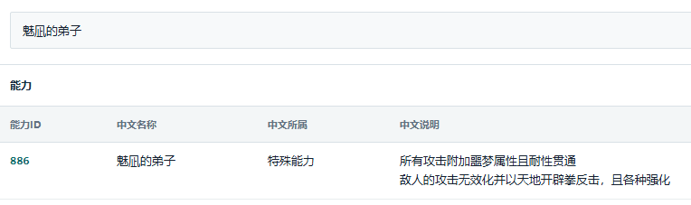


战斗中添加“强制胜利”选项，不同于 MTool 的胜利，这里的强制胜利是将当前敌人设为击败状态，并交给原版流程进行胜利结算。

添加“合成改”菜单，可以在任意地方进行合成，并可以选择无视条件直接合成。
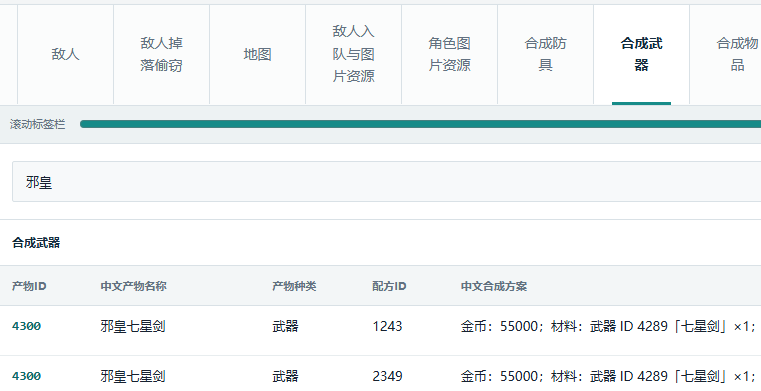

添加“图片资源覆盖”开关，可以一键替换游戏中的资源。
开启后，在“游戏目录\GouqiGraphicsOverride”里面的图片会覆盖“游戏目录\Graphics”里面的同名图片；如果图片不存在，则会继续使用“游戏目录\Graphics”里面的图片。
例如：GouqiGraphicsOverride\Faces\ruka_fc1.png 会覆盖 Graphics\Faces\ruka_fc1.png（这张图片是鲁卡的正常形态的头像）。
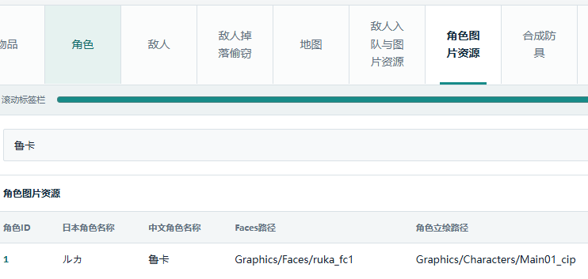

如果游戏目录下面没有 GouqiGraphicsOverride 文件夹，可以自己创建一个（与 Graphics 在同一层级）。

GouqiGraphicsOverride 下面的 Battlers\Faces\Pictures 等子文件夹可能需要自己创建，文件夹结构、文件名和扩展名与 Graphics 最好严格保持一致，区分大小写。
补充用法：如果要使用某些服装包（例如“穿衣服服装包”），可放到本 Mod 的 GouqiGraphicsOverride 目录下，开启“图片资源覆盖”开关即可生效，而不需要替换 Graphics 里面的原版文件。

VERSION 1.3
允许修改角色名字，将GouqiConfig.json放到游戏根目录（跟 Game.exe 在同一目录），编辑 preset_names 即可输入预置的角色名字；
配合之前的“图片资源覆盖”，可以实现修改角色头像和名字。
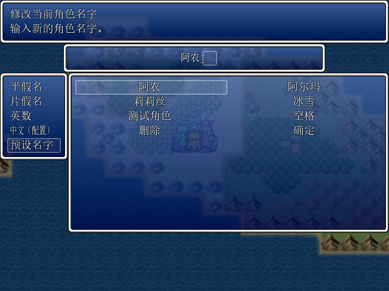
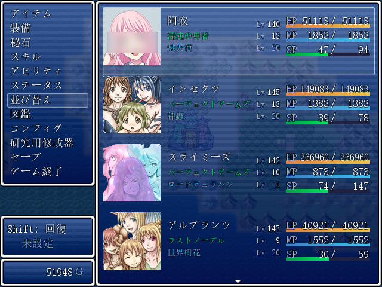
添加“移除伤害浮动的开关”，方便测试伤害。
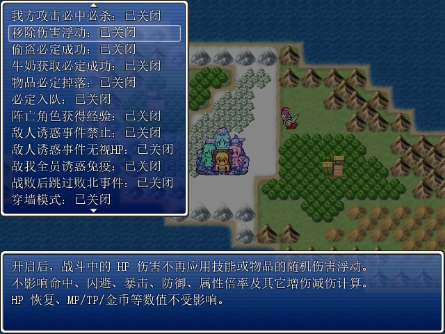
添加“女仆对话菜单”，可以随时编辑队伍。
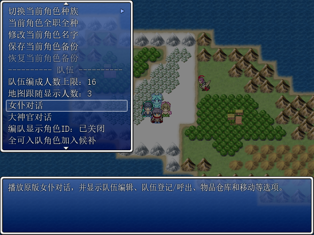
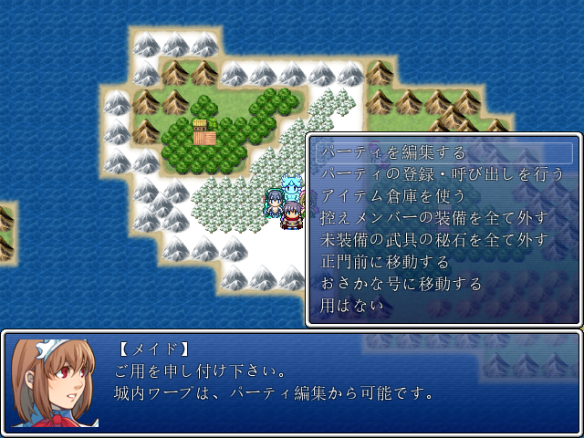
添加“大神官对话菜单”，可以随时转职。
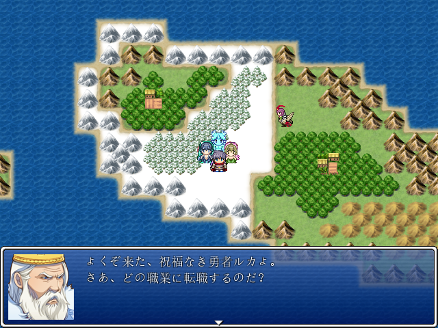
【注】其实已有功能“当前角色学习技能”可以让角色学习技能 ID 为 10101 的特技“转职之书”，也能随时转职。
“敌人资料与战斗”菜单中，“敌人信息”新增敌人的“属性抗性”和“状态抗性”显示。
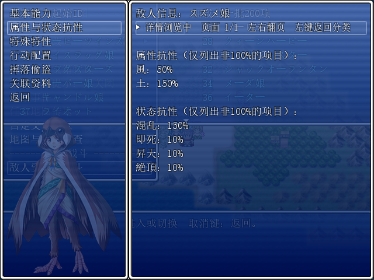
添加“成就数据”菜单，现在可以修改各项游戏成就。
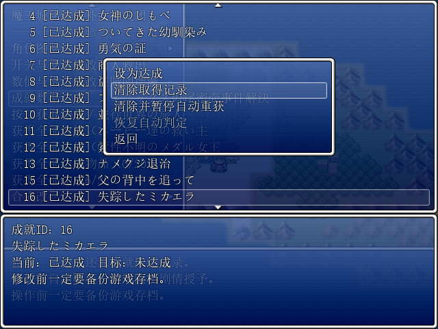
添加“原版禁止队伍排序”的菜单，若游戏原版锁定了队伍排序功能，可在此处解除限制。
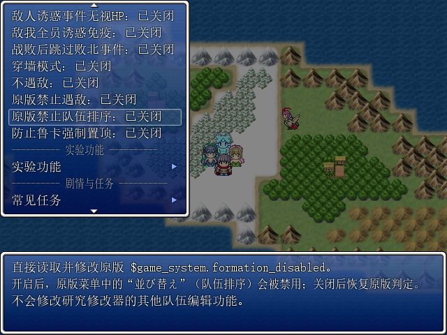
添加“调用事件”菜单，暂时只有“野营”的事件，后续将扩展手动调用事件的功能。
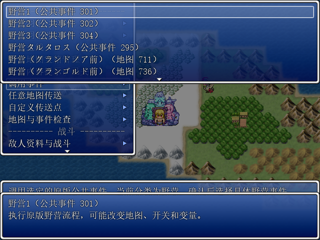
添加“允许装备同颜色秘石”菜单，开启后，同一件装备可以镶嵌相同颜色的秘石。
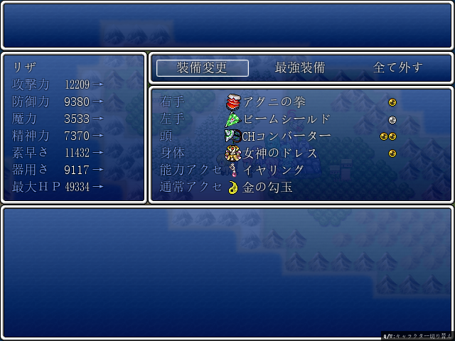
“区域优先遇敌”功能，可自定义当前区域的遇敌规则，包含两种模式：
手动目标：指定在当前区域必定遭遇特定怪物。
自动规则：未指定手动目标或目标失效时生效。可选规则包括“未遭遇”、“未入队”、“Boss”及“原版随机”。针对存在多只 Boss 的区域，可开启“Boss仅未遭遇”以提升未遭遇 Boss 的优先级。
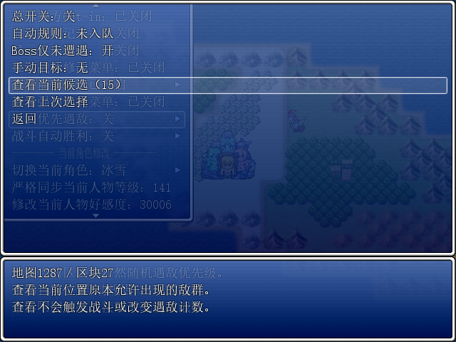
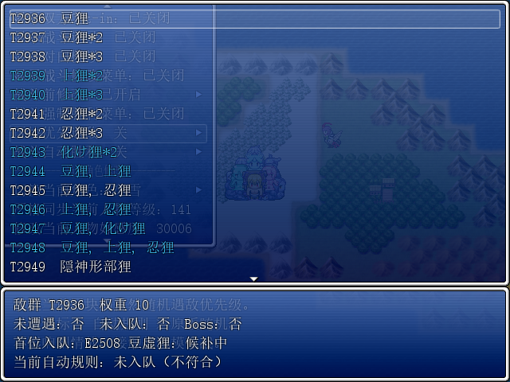
添加“战斗自动胜利”菜单，可以让野外遭遇直接胜利，不同于 Mtool，这里的胜利走结算流程。另外可以设置“跳过Boss”、“跳过未入队”、“经验倍率”和“职业经验倍率”。
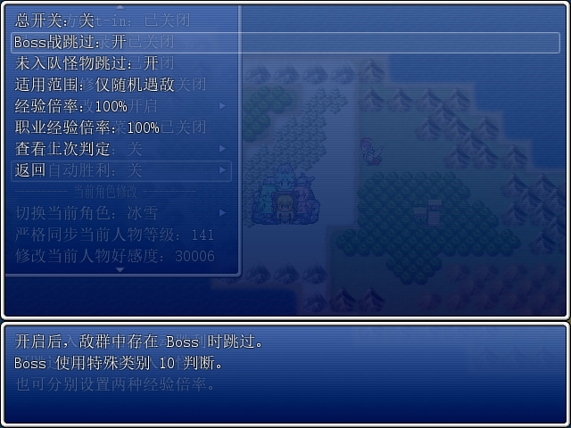
“战斗修改”的“异常状态”中添加各种异常状态，包括圣痕和暗秽；“战斗修改”的“Buff”中添加“武技扩散”的Buff。
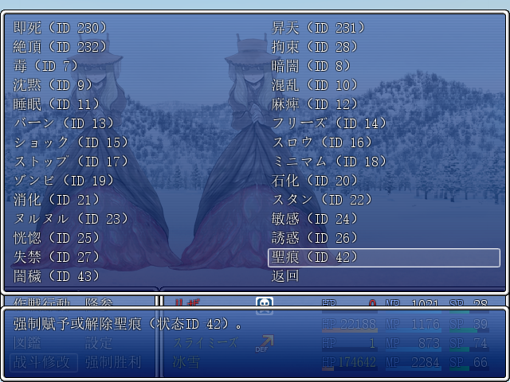
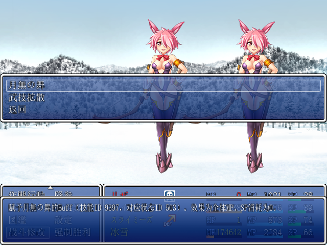
“研究修改器”下面添加“战斗前修改”的菜单，可以添加各种异常状态和Buff（现在只有“月无之舞”和“武技扩散”），可以指定敌我，开战后自动添加，不需要再用“战斗修改”来手动添加。（注意这里直接赋予升天等类似状态可能会出问题）
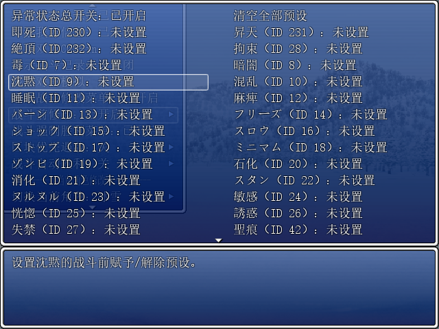
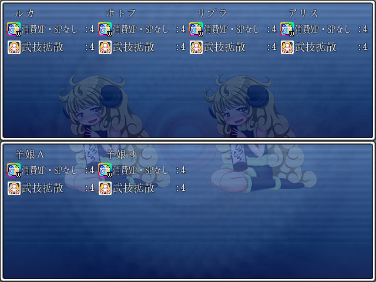
添加“常见任务”的菜单，现在有“升级瓦尼拉的小店”的功能，允许一键升级“瓦尼拉的小店”和完成相关事件。
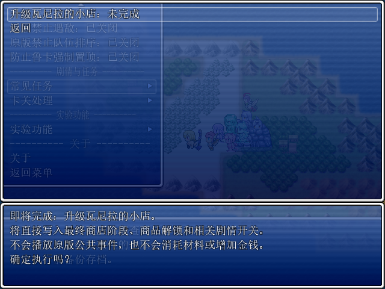
NOTES
附送的数据 CSV 可用于快速查找敌人、角色、职业、种族、技能、能力和物品 ID。线上版的“数据库名称表”提供搜索、分页和详情查看。
这是研究和调试工具，不负责游戏平衡。建议保留原始存档，并在测试结束后关闭重复或影响流程的开关。
本页截图仅用于说明菜单操作，不是游戏原始 Graphics 资源。点击任意截图可以放大查看。